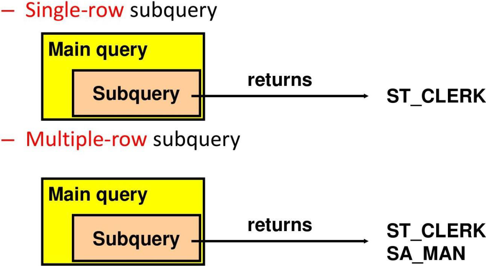

Subqueries
Using a Subquery to Solve a Problem

Subquery Syntax
- The subquery (inner query) executes once before the main query (outer query).
- The result of the subquery is used by the main query.
SELECT last_name
FROM nikovits.employees
WHERE salary >
(SELECT salary
FROM nikovits.employees
WHERE last_name = 'Abel');
| LAST_NAME |
|---|
| King |
| Kochhar |
| De Haan |
| Greenberg |
| Russell |
| Partners |
| Errazuriz |
| Ozer |
| Hartstein |
| Higgins |
Guidelines for Using Subqueries
- Enclose subqueries in parentheses.
- Place subqueries on the right side of the comparison condition.
- The ORDER BY clause in the subquery is not needed unless you are performing Top-N analysis.
- Use single-row operators with single-row subqueries, and use multiple-row operators with multiple-row subqueries.
Types of Subqueries

Single-Row Subqueries
- Return only one row
- Use single-row comparison operators
| Operator | Meaning |
|---|---|
| = | Equal to |
| > | Greater than |
| >= | Greater than or equal to |
| < | Less than |
| <= | Less than or equal to |
| <> | Not equal to |
Executing Single-Row Subqueries
SELECT last_name, job_id, salary
FROM nikovits.employees
WHERE job_id =
(SELECT job_id
FROM nikovits.employees
WHERE employee_id = 141)
AND salary >
(SELECT salary
FROM nikovits.employees
WHERE employee_id = 143);
| LAST_NAME | JOB_ID | SALARY |
|---|---|---|
| Nayer | ST_CLERK | 3200 |
| Mikkilineni | ST_CLERK | 2700 |
| Bissot | ST_CLERK | 3300 |
| Atkinson | ST_CLERK | 2800 |
| Mallin | ST_CLERK | 3300 |
| Rogers | ST_CLERK | 2900 |
| Ladwig | ST_CLERK | 3600 |
| Stiles | ST_CLERK | 3200 |
| Seo | ST_CLERK | 2700 |
Using Group Functions in a Subquery
SELECT last_name, job_id, salary
FROM nikovits.employees
WHERE salary =
(SELECT MIN(salary)
FROM nikovits.employees);
| LAST_NAME | JOB_ID | SALARY |
|---|---|---|
| Olson | ST_CLERK | 2100 |
The HAVING Clause with Subqueries
- The Oracle server executes subqueries first.
- The Oracle server returns results into the HAVING clause of the main query.
SELECT department_id, MIN(salary)
FROM employees
GROUP BY department_id
HAVING MIN(salary) >
(SELECT MIN(salary)
FROM employees
WHERE department_id = 50);
What Is Wrong with This Statement?
SELECT employee_id, last_name
FROM employees
WHERE salary =
(SELECT MIN(salary)
FROM employees
GROUP BY department_id);

Single-row operator with multiple-row subquery
Will This Statement Return Rows?
SELECT last_name, job_id
FROM employees
WHERE job_id =
(SELECT job_id
FROM employees
WHERE last_name = 'Haas');

Subquery returns no values.
Multiple-Row Subqueries
- Return more than one row
- Use multiple-row comparison operators
| Operator | Meaning |
|---|---|
| IN | Equal to any member in the list |
| ANY | Compare value to each value returned by the subquery |
| ALL | Compare value to every value returned by the subquery |
Using the ANY Operator in Multiple-Row Subqueries
SELECT employee_id, last_name, job_id, salary
FROM nikovits.employees
WHERE salary < ANY
(SELECT salary
FROM nikovits.employees
WHERE job_id = 'IT_PROG')
AND job_id <> 'IT_PROG';
| EMPLOYEE_ID | LAST_NAME | JOB_ID | SALARY |
|---|---|---|---|
| 132 | Olson | ST_CLERK | 2100 |
| 136 | Philtanker | ST_CLERK | 2200 |
| 128 | Markle | ST_CLERK | 2200 |
| 135 | Gee | ST_CLERK | 2400 |
| 127 | Landry | ST_CLERK | 2400 |
| 191 | Perkins | SH_CLERK | 2500 |
| 182 | Sullivan | SH_CLERK | 2500 |
| 144 | Vargas | ST_CLERK | 2500 |
| 140 | Patel | ST_CLERK | 2500 |
Using the ALL Operator in Multiple-Row Subqueries
SELECT employee_id, last_name, job_id, salary
FROM nikovits.employees
WHERE salary < ALL
(SELECT salary
FROM nikovits.employees
WHERE job_id = 'IT_PROG')
AND job_id <> 'IT_PROG';
| EMPLOYEE_ID | LAST_NAME | JOB_ID | SALARY |
|---|---|---|---|
| 185 | Bull | SH_CLERK | 4100 |
| 192 | Bell | SH_CLERK | 4000 |
| 193 | Everett | SH_CLERK | 3900 |
| 188 | Chung | SH_CLERK | 3800 |
| 137 | Ladwig | ST_CLERK | 3600 |
| 189 | Dilly | SH_CLERK | 3600 |
| 141 | Rajs | ST_CLERK | 3500 |
| 186 | Dellinger | SH_CLERK | 3400 |
| 133 | Mallin | ST_CLERK | 3300 |
| 129 | Bissot | ST_CLERK | 3300 |
| 180 | Taylor | SH_CLERK | 3200 |
| 138 | Stiles | ST_CLERK | 3200 |
Null Values in a Subquery
SELECT emp.last_name
FROM employees emp
WHERE emp.employee_id NOT IN
(SELECT mgr.manager_id
FROM employees mgr);
no rows selected
x NOT IN (A, B, NULL) → Unknown
Multiple-Column Subqueries
Main query
WHERE (MANAGER_ID, DEPARTMENT_ID) IN
┌─────────────────────┐
│ Subquery │
│ 100 90 │
│ 102 60 │
│ 124 50 │
└─────────────────────┘
Each row of the main query is compared to values from a multiple-row and multiple-column subquery.
Pairwise Comparison Subquery
Display the details of the employees who are managed by the same manager and work in the same department as the employees with EMPLOYEE_ID 199 or 174.
SELECT employee_id, manager_id, department_id
FROM employees
WHERE (manager_id, department_id) IN
(SELECT manager_id, department_id
FROM employees
WHERE employee_id IN (199, 174))
AND employee_id NOT IN (199, 174);
Nonpairwise Comparison Subquery
Display the details of the employees who are managed by the same manager as the employees with EMPLOYEE_ID 174 or 199 and work in the same department as the employees with EMPLOYEE_ID 174 or 199.
SELECT employee_id, manager_id, department_id
FROM employees
WHERE manager_id IN
(SELECT manager_id
FROM employees
WHERE employee_id IN (174, 199))
AND department_id IN
(SELECT department_id
FROM employees
WHERE employee_id IN (174, 199))
AND employee_id NOT IN (174, 199);
Scalar Subquery Expressions
- A scalar subquery expression is a subquery that returns exactly one column value from one row.
- Scalar subqueries can be used in:
- Condition and expression parts of
DECODEandCASE - All clauses of a
SELECTstatement exceptGROUP BY
- Condition and expression parts of
Scalar Subqueries Examples
Scalar Subqueries in CASE Expressions
SELECT employee_id, last_name,
(CASE
WHEN department_id =
(SELECT department_id
FROM departments
WHERE location_id = 1800)
THEN 'Canada' ELSE 'USA'
END) location
FROM employees;
Scalar subqueries in ORDER BY clause
SELECT employee_id, last_name
FROM employees e
ORDER BY (SELECT department_name
FROM departments d
WHERE e.department_id = d.department_id);
Correlated Subqueries
- Correlated subqueries are used for row-by-row processing.
- Each subquery is executed once for every row of the outer query.
- The inner query references columns from the outer query (making it "correlated").
GET candidate row from outer query ↓ EXECUTE inner query using candidate row value ↓ USE values from inner query to qualify or disqualify candidate row
The subquery references a column from a table in the parent (outer) query.
SELECT column1, column2, ...
FROM table1 outer
WHERE column1 operator
(SELECT column1, column2
FROM table2
WHERE expr1 = outer.expr2);
Find all employees who earn more than the average salary in their department.
SELECT last_name, salary, department_id
FROM employees outer
WHERE salary >
(SELECT AVG(salary)
FROM employees
WHERE department_id = outer.department_id);
Each time a row from the outer query is processed, the inner query is evaluated.
Correlated Subquery Example
Display details of those employees who have changed jobs at least twice.
SELECT e.employee_id, e.last_name, e.job_id
FROM employees e
WHERE 2 <= (
SELECT COUNT(*)
FROM job_history
WHERE employee_id = e.employee_id
);
| EMPLOYEE_ID | LAST_NAME | JOB_ID |
|---|---|---|
| 101 | Kochar | AD_VP |
| 176 | Taylor | SA_REP |
| 200 | Whalen | AD_ASST |
Using the EXISTS Operator
- The EXISTS operator tests for the existence of rows in the result set of the subquery.
- It returns TRUE if the subquery returns at least one row, FALSE otherwise.
- NOT EXISTS does the opposite.
If a subquery row value is found:
- The search does not continue in the inner query (short-circuits after first match).
- The condition is flagged TRUE.
If a subquery row value is not found:
- The condition is flagged FALSE.
- The search continues in the inner query until all rows are checked or a match is found.
Find Employees Who Have at Least One Person Reporting to Them
SELECT employee_id, last_name, job_id, department_id
FROM employees outer
WHERE EXISTS (
SELECT 'X'
FROM employees
WHERE manager_id = outer.employee_id
);
| EMPLOYEE_ID | LAST_NAME | JOB_ID | DEPARTMENT_ID |
|---|---|---|---|
| 100 | King | AD_PRES | 90 |
| 101 | Kochhar | AD_VP | 90 |
| 102 | De Haan | AD_VP | 90 |
| 103 | Hunold | IT_PROG | 60 |
| 108 | Greenberg | FI_MGR | 100 |
| 114 | Raphaely | PU_MAN | 30 |
| 120 | Weiss | ST_MAN | 50 |
| 121 | Fripp | ST_MAN | 50 |
| 122 | Kaufling | ST_MAN | 50 |
Find All Departments That Do Not Have Any Employees
SELECT department_id, department_name
FROM departments d
WHERE NOT EXISTS (
SELECT 'X'
FROM employees
WHERE department_id = d.department_id
);
| DEPARTMENT_ID | DEPARTMENT_NAME |
|---|---|
| 120 | Treasury |
| 130 | Corporate Tax |
| 140 | Control And Credit |
| 150 | Shareholder Services |
| 160 | Benefits |
| 170 | Manufacturing |